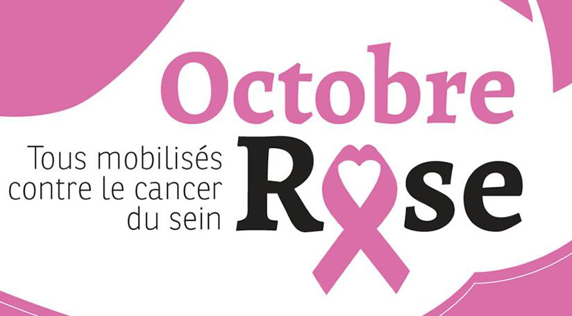
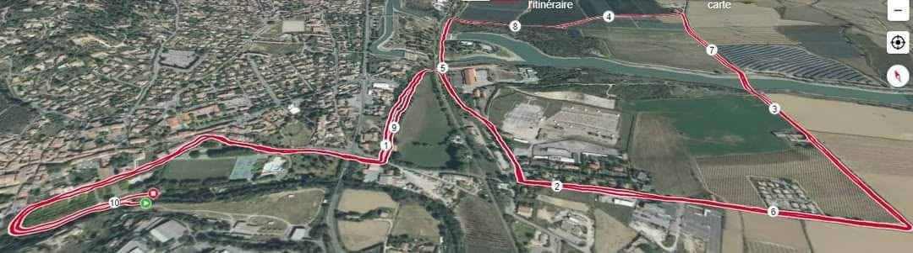
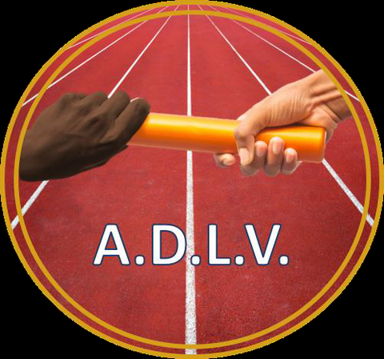
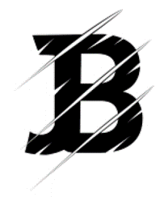
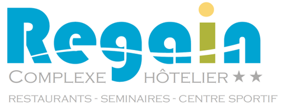
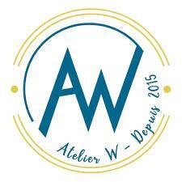

Randonnée 3 km
Départ 09:00
Une boucle accessible à tous, à parcourir à son rythme. Marcher pour soutenir la cause, l'essentiel est d'être là, ensemble.
8 €3 km
5e édition · Course solidaire Octobre Rose
Une course pour la vie, au cœur de Sainte-Tulle. On ne le dit pas avec des mots, on le dit en foulées.
Le sens de la course
La Foulée Tullésaine est née en 2022 d'une idée simple, portée par la société New Wave et le club d'athlétisme ADLV de Sainte-Tulle : se rassembler le temps d'une matinée pour dire à celles et ceux qu'on aime combien ils comptent.
Le sport est un remède universel. Il prévient la maladie, accompagne la guérison et agit sur le corps comme sur l'esprit. En courant, en marchant, nous choisissons de ne laisser seule aucune personne touchée par un cancer.
L'intégralité des bénéfices est reversée à la Maison Sport-Santé de Manosque. Labellisée par l'État, elle accompagne par l'activité physique adaptée les personnes atteintes de maladies chroniques, dont le cancer, pour retrouver forme, autonomie et confiance.
« Notre choix : celui de courir avec ces personnes pour la vie, et la plus belle des santés possibles. »

Depuis 1985, le mois de sensibilisation au cancer du sein mobilise autour du dépistage précoce. Le ruban rose en est le symbole. La Foulée Tullésaine porte ce combat sur ses routes.
Au programme
Du chrono au plaisir, des plus petits aux marcheurs : cinq formats pour que personne ne reste sur la ligne de départ.
Départ 09:00
Une boucle accessible à tous, à parcourir à son rythme. Marcher pour soutenir la cause, l'essentiel est d'être là, ensemble.
Départ 10:00
Parcours quasi plat (D+ 18 m), deux boucles dans la vallée de la Durance. Labellisé par la Fédération Française d'Athlétisme et qualificatif pour les championnats de France du 10 km.
Départ 11:30
Le 1 km des plus jeunes, pour que les poussins vivent eux aussi leur ligne d'arrivée sous les encouragements.
Départ 11:45
Un 2 km découverte pour les benjamins, minimes et tous ceux qui veulent courir sans chrono, dans la bonne humeur.
Départ 12:15
Un adulte, un enfant, un même dossard. Le relais qui transforme la course en moment partagé entre générations.
Inscriptions en ligne sur Sportips. Choisissez votre format et rejoignez l'aventure.
Ouvrir la billetterieRemise des récompenses à 12h30. Programme officiel 2026, inscriptions en ligne sur Sportips.
Le parcours
Départ et arrivée au cœur du parc municipal Max Trouche, sous les platanes. Le 10 km déroule deux boucles dans la vallée de la Durance, sur un tracé jugé « agréable mais technique » par les vainqueurs des éditions passées.

Parc Max Trouche, Complexe Regain, RN 96, 04220 Sainte-Tulle · voir sur la carte ↗
« Plutôt que de le dire avec des mots, nous choisissons de le dire en foulée. »
Plus de 1 500 coureurs réunis · 4 éditions · une même cause
Infos pratiques
Parc municipal Max Trouche, près du Complexe Regain à Sainte-Tulle. Stationnement à proximité immédiate du parc.
Sur place, au village course, le matin de l'épreuve. Ni certificat médical ni licence ne sont demandés : il suffit de venir.
Points de ravitaillement placés sur le parcours et à l'arrivée, pour récupérer dans les meilleures conditions.
Présence de kinés sur le site pour vous soulager et récupérer dans les meilleures conditions après l'effort.
Chronométrage assuré par Sportips. Suivi en temps réel de vos coureurs grâce à la fan zone FollowMySport.
Une matinée familiale et solidaire au parc Max Trouche, portée par des bénévoles et une assistance enthousiaste.
En images
Le souffle du départ, les familles, les sourires : retour sur les éditions précédentes au parc Max Trouche.
Ils font la course
Sans eux, rien ne serait possible. Grâce à leur soutien, la totalité des bénéfices part à la cause.
Le site de la Foulée Tullésaine est offert et réalisé par SOL·IA, studio local d'automatisation et d'intelligence artificielle pour les pros et associations du territoire.
sol-ia.tech ↗
ADLV Maison Sport-Santé
Maison Sport-Santé Sportips
Sportips
Brand-On
Complexe Regain
Atelier W AES Communication
AES CommunicationTrois formules pour soutenir l'événement et reverser à la lutte contre le cancer du sein, tout en gagnant en visibilité locale.
Rendez-vous le 11 octobre
Rejoignez la 5e Foulée Tullésaine et faites de chaque foulée un soutien.